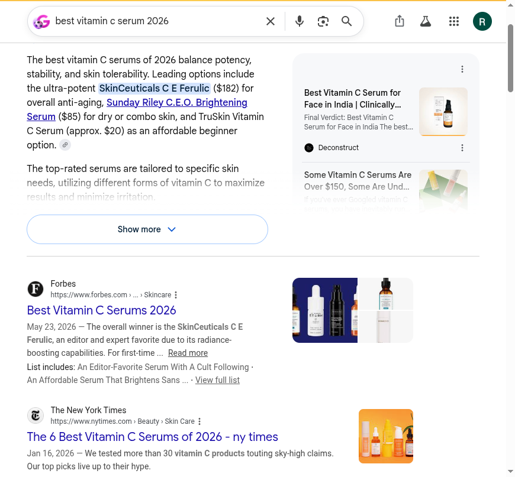

Blackwell Enterprises
An external audit of how AI engines and search see BeautyStat today. And what we would do about it.
We graded BeautyStat on five dimensions of how AI engines and search treat the brand. Each dimension is scored 0 to 100 against observed behavior across AI answer engines, the brand's own indexed pages and structured data, the review and beauty-press corpus, and the agent-commerce surface. Competitor scores are our estimates from the same public signals. Composite is the simple average.
BeautyStat is the rare DTC skincare brand that did the technical basics right: real Product and Offer schema, a strong meta description, an entity on the homepage. That is why this is a D and not an F, and why the competitive set (SkinCeuticals, The Ordinary, TruSkin, averaging ~77) is within reach. The gap is the layer that actually drives an AI recommendation. Recommendability, at 32, is the lowest dimension: asked for the best vitamin C serum, AI engines name SkinCeuticals, TruSkin, and La Roche-Posay, and never BeautyStat. The award-winning reputation and the chemist's authority are real. They are just not machine-readable, so no engine reaches them.
| Dimension | BeautyStat | SkinC. | Ordinary | TruSkin | What it measures |
|---|---|---|---|---|---|
| Discoverability | 62 |
80 | 82 | 72 | Entity presence, agent discovery files, crawler access, third-party listings |
| Quotability | 60 |
70 | 76 | 66 | Schema depth, structured product and review data, accuracy in machine-readable form |
| Recommendability | 32 |
90 | 88 | 80 | Inclusion in AI category answers and the listicles engines cite |
| Transactability | 66 |
70 | 80 | 72 | UCP and MCP endpoints, payment handlers, agent-readable pricing |
| Reputation | 64 |
85 | 80 | 70 | Review presence and rating, sentiment, links from the entity to that reputation |
| Composite | 57 (D) | 79 (B+) | 81 (B+) | 72 (B-) | BeautyStat trails the competitive average by about 20 points, almost all of it on recommendability and the machine-readable reputation layer. |
Grading scale: A 90+, B 75 to 89, C 60 to 74, D 50 to 59, F below 50. Competitor scores are estimates from observed public signals, not full audits of those brands. Method and queries in the methodology section.
BeautyStat is a science-led skincare brand with a genuine edge: a founder who is a 20-plus-year veteran cosmetic chemist (Ron Robinson), a patented vitamin C formula, an award-winning hero product, and a celebrity following. It also did the technical groundwork most DTC brands skip. None of that is reaching the AI answers that sell vitamin C serums, because the three things that drive a recommendation are missing. When we asked AI engines for the best vitamin C serum, BeautyStat was not named once. A value brand, TruSkin, was.
Five findings, ordered worst first.
AggregateRating for Google's stars or for an AI engine to quote.Organization or founder entity tying the authority to the brand.llms.txt and agents.md are the default Shopify boilerplate, not a content map that tells an agent what makes BeautyStat different.Finding 1 of 5 · Critical
AI answer engines are where skincare shoppers increasingly start. They do not browse a category; they ask "what is the best vitamin C serum" and get a short, synthesized shortlist. We ran the full six-engine battery, two passes each (from the model's memory with search off, then live web retrieval on), on "best vitamin C serum 2026." BeautyStat was named in zero of nine passes.
| Engine | From memory (search off) | Live web retrieval (search on) |
|---|---|---|
| ChatGPT | not named | not named |
| Claude | not named | not named |
| Gemini | not named | not named |
| Perplexity (incognito) | retrieval only | not named |
| Copilot | retrieval only | not named |
| Google AI Overview | retrieval only | not named |
This is a harder absence than a simple ranking miss. The engines that can answer from memory alone (ChatGPT, Claude, Gemini) do not name BeautyStat even there. The brand is thin in the models' priors and absent from the sources they retrieve. SkinCeuticals C E Ferulic is the near-universal benchmark across all six engines.
Google AI Overview, live retrieval: "best vitamin C serum 2026"
"The best vitamin C serums of 2026 balance potency, stability, and skin tolerability. Leading options include the ultra-potent SkinCeuticals C E Ferulic ($182), Sunday Riley C.E.O. Brightening Serum ($85), and TruSkin Vitamin C Serum (approx. $20) as an affordable beginner option."

Google AI Overview for BeautyStat's hero category. BeautyStat is absent; the named picks span premium (SkinCeuticals) to value (TruSkin), and the cited sources are Forbes and New York Times roundups. Captured June 22, 2026.
Why this is the most expensive finding in the deck
Vitamin C serum is the category BeautyStat was built to win: the hero Universal C Skin Refiner is 20% L-ascorbic acid with patented stabilization. Being absent at the moment of recommendation is worth more than any single ranking position, because the engine is choosing on the shopper's behalf and never offers BeautyStat as an option. The product's quality cannot rescue a recommendation it is never part of. And the gap compounds: every engine that adds live retrieval reads the same listicles and the same empty schema layer and reaches the same competitors.
The fix. Recommendability is downstream of the next three findings. Machine-readable reviews, a founder and science entity, and presence in the category sources engines cite are what pull a brand into these answers. We also seed the specific roundups and comparison queries where "best vitamin C serum" gets decided.
Finding 2 of 5 · Critical
This is the finding that should be encouraging. BeautyStat's reputation is its single strongest asset, and it is genuinely strong. It is also disconnected from the structured data, so no AI engine can attribute it.
Now the problem. The product page collects reviews through Yotpo, but the rating never reaches the structured data.
// beautystat.com hero product, structured data found JSON-LD: Product, Offer, Brand, availability InStock AggregateRating / Review schema: none // the Yotpo star rating loads in JavaScript and is absent from the JSON-LD, // confirmed the way an engine reads it: static HTML + structured data only.
Why it matters
No rich-result stars in Google, so the listing is a plain blue link while competitors show ratings. And when an AI engine compares vitamin C serums, it quotes the ratings it can read; BeautyStat's cannot be read, so a competitor's gets quoted instead. The reputation exists. It does no work.
The fix. Emit AggregateRating and Review schema from the Yotpo data BeautyStat already collects, so the star rating becomes machine-readable for both Google rich results and AI engines. One integration, the whole catalog covered.
Finding 3 of 5 · High severity
BeautyStat's entire positioning is authority: a veteran cosmetic chemist and patented technology. That authority is on the page and absent from the structured data.
// beautystat.com homepage, entity schema JSON-LD @types: OnlineStore, WebSite, SearchAction Organization: none founder (Person, Ron Robinson): none // the patents and the chemist are in the copy, not in the schema.
Why it matters
AI engines weight entity authority heavily when deciding what to recommend, and in skincare the whole question is "who formulated this and are they credible." With no machine-readable founder or Organization, the credibility that should make BeautyStat the obvious answer to "a vitamin C serum from an actual chemist" is not legible. The brand is winning the human version of this argument and losing the machine version.
The fix. Organization plus a founder Person entity (Ron Robinson and his credentials), sameAs links to the authoritative profiles for him and the brand, and structured references to the patents and clinical claims. This is the groundwork that turns reputation into recommendation.
Finding 4 of 5 · High severity
The title tag is the line Google weighs most for ranking and the line an AI engine reads first to understand a page. BeautyStat's is a brand and one generic word.
// beautystat.com homepage <head>, today <title>BeautyStat Skincare</title> // no "vitamin C serum", no high-intent terms <meta name="description"> present and strong (chemist, patented, proven) <meta property="og:image"> missing on the homepage
Why it matters
"BeautyStat Skincare" ranks for the brand name and little else, not for the categories the brand wants to own, like "vitamin C serum" or "vitamin C serum for dark spots." The meta description is good, which is what makes the thin title the weak link. The missing share image also means links to the homepage render without a preview on social and in chat surfaces.
The fix. Descriptive, keyworded title templates and an https share image on the homepage, carried through to collection and product titles, so the category terms BeautyStat competes on are in the signals engines read first. Theme-level and low-risk.
Finding 5 of 5 · Medium severity
Shopify auto-provisions an agent stack: llms.txt, agents.md, a UCP/MCP endpoint. BeautyStat has all of it, and it works. The content is the default.
llms.txt = the generic 4.3 KB Shopify "Agent Instructions" template with the store name filled in, routing agents to Shop Pay. Zero brand, founder, science, or product differentiation.Why it matters
To an agent reading the llms.txt today, BeautyStat is an anonymous Shopify store, not "the patented, chemist-formulated vitamin C brand." The transaction rails work; the content that would make an agent choose BeautyStat is blank. The same gap shows up in the brand's content: a 141-post blog of skincare science from a working chemist is exactly the authority content AI engines reward, and none of it is surfaced to the agent layer or wired in with Article schema.
The fix. Rewrite llms.txt and agents.md as a real content map (the chemist, the patents, the hero product and what makes it different, the science blog), and wire the blog in with Article schema, keeping the working Shopify transaction layer underneath.
The vitamin C serum set, on the signals that decide who an AI engine recommends. BeautyStat wins on founder story and product credibility. On the machine-readable and category-content layer, it is the one showing up empty.
| Signal | BeautyStat | SkinCeuticals | The Ordinary | TruSkin |
|---|---|---|---|---|
| Named in AI "best vitamin C serum" answers | no | yes | yes | yes |
| Homepage title | generic ("BeautyStat Skincare") | bot-gated | descriptive | descriptive |
| Review rating in product schema | none | yes (est.) | yes (est.) | yes (est.) |
| Publishes category content engines cite | minimal | yes | yes | yes (own guide) |
The only fully verified row is the first, and it is the one that matters: every competitor is named in the AI answer, BeautyStat is not. The rest are estimates from public signals. The pattern holds across them. BeautyStat has the better chemist and a patented, award-winning product, and is losing the recommendation to brands that are simply more legible to a machine.
Two phases. Phase 1 is a 30-day sprint that makes BeautyStat's reputation and authority machine-readable and gets it into the category answers. Phase 2 is ongoing AI visibility work that moves the composite from D toward B over the following months. After Phase 1 we measure against benchmarks set together and decide whether Phase 2 makes sense.
Phase 1 · 30 days
Five remediations, each closing a finding above.
AggregateRating and Review schema from the Yotpo data across the catalog (finding 2)Organization plus a founder Person entity for Ron Robinson, with sameAs and structured patents and claims (finding 3)llms.txt and agents.md rewritten as a content map; the science blog wired in with Article schema (finding 5)Phase 2 and beyond
Phase 1 makes BeautyStat readable. Phase 2 makes it recommended, and keeps it there: continuous AI behavior monitoring per dimension, an entity and authority program that puts Ron Robinson and the science where engines treat it as a citable source, ongoing placement in the category roundups, and the protocol-evolution work as agent commerce advances. Phase 2 scope and pricing are discussed after Phase 1 benchmarks land.
Every finding came from running specific tools and queries against public surfaces, in an order designed to separate what the brand publishes from what machines actually do with it. It is all externally reproducible.
Truth table, frozen first
Before querying any engine, we pulled BeautyStat's own machine surface directly: homepage and product <head> and JSON-LD, robots.txt, llms.txt, agents.md, /.well-known/ucp, and the product, collection, and blog sitemaps (26 products, 13 collections, roughly 140 posts), pulled June 22, 2026.
AI behavior and recommendability
We ran the full six-engine battery (ChatGPT, Perplexity, Gemini, Claude, Google AI Overview, Microsoft Copilot) in headed browser sessions, two passes each: from the model's memory with web search off, then with live retrieval on. Logged-in engines ran in incognito or temporary chat (ChatGPT Temporary Chat, Perplexity Incognito) so saved history did not bias the result; Copilot ran as a guest. Each engine and pass was captured. BeautyStat was named in zero of nine passes, the basis of finding 1.
Reputation corpus
We pulled BeautyStat's reputation live from Trustpilot, the BBB, Reddit, YouTube, Sephora, and the brand's own review surface, and checked whether any of it is linked to the product's structured data. The on-site Yotpo reviews and the roughly 4.5-star Sephora rating are real; the missing AggregateRating schema link is finding 2.
Competitive set
SkinCeuticals, The Ordinary, and TruSkin were checked the same day on the same signals. Their dimension scores are estimates from those public signals, not full audits, and are labeled as such on the scorecard. SkinCeuticals' site is behind a bot challenge, so its on-page signals are inferred from its category presence.
robots.txt, sitemap.xml, llms.txt, and /products.json. Reputation and recommendability findings are reproducible by running the same public queries. Counts pulled June 22, 2026.